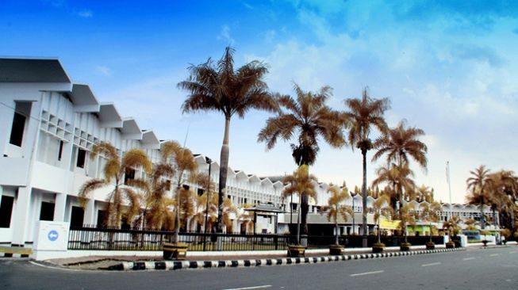
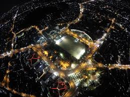

Tentang Kota Jember
Sejarah
Jember awalnya merupakan wilayah hutan yang kemudian dibuka menjadi daerah perkebunan pada masa kolonial Belanda. Daerah ini berkembang pesat karena hasil perkebunan terutama tembakau yang menjadi komoditas unggulan hingga saat ini.
Geografi
Terletak di bagian timur Provinsi Jawa Timur, Jember memiliki luas wilayah 3.293,34 km². Wilayahnya mencakup dataran rendah hingga pegunungan dengan pantai di sisi selatan. Keberagaman bentang alam ini menjadikan Jember kaya akan potensi wisata alam.
Demografi
Jember dihuni oleh lebih dari 2,5 juta penduduk dengan mayoritas suku Jawa dan Madura. Keberagaman ini menciptakan akulturasi budaya yang unik, tercermin dalam bahasa, adat istiadat, dan kehidupan sehari-hari masyarakatnya.

